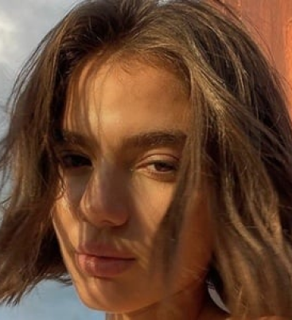

I was born
and raised in Ternopil city, Ukraine until I moved to London, UK
back in 2001. 30 years ago I’ve made a decision that was best thing
that’s ever happened for my career. I became a Hair
Stylist. I’m proud to be the owner of Tanya Hairdres...
As the Lead Stylist & Assistant Stylist Mentor I use my 30 years behind the chair to set the bar for what atrue professional salon experience should be: exceptional customer service, talent, skill & an unparalleledclient experience. I will educate you on every part of your experience; from the actual color process & it’smaintenance, to how to take care of your new look at home. My extensive education have helped me hone my skills in dimensional color, balayage/hair painting,advanced color formulations, as well as a variety of modern hair extension application methods. I pridemyself on complete honesty with my clients, by kindly directing them to the colors & styles that will bestfit your lifestyle, budget, maintenance, and flatter your overall look. It goes without saying that my clients expect great hair, but I strive to go beyond that with my personalvision of a happier & kinder experience. My clients leave feeling not only beautiful on the outside, but theinside as well. I will take the time to listen, figure out a personalized long term plan for your hair, anddevelop a formula that is completely customized for your experience with me. If it sounds like we might be the perfect fit I would love to meet you.

Liuda
Stylist
Liuda is a new member of our team trained to the highest standards by Tanya. She is thoughtful, motivated and has a truly special touch in all areas of cut and coloring.
Yulia
Brow Artist
Yuliya is passionate about her art andviews eyebrow treatment as a livemasterpiece. As a perfectionist by nature, she has a keen eye for design and passion for enhancing natural beauty.
Olga
Receptionist
As the first and last face our clients see, I love making genuine connections, and seeing the amazing transitions our clients go through during their service.